Part 1: Filters and Edges
1.1 Convolutions from Scratch
I wrote four-loop and two-loop convolution functions using NumPy. Both flip the kernel and use zero padding to keep the output the same size. I applied a 9 × 9 box filter (each entry is 1/81), Dx = [1, 0, −1], and Dy = Dxᵀ to my grayscale photo. Gray represents zero in the derivative images.
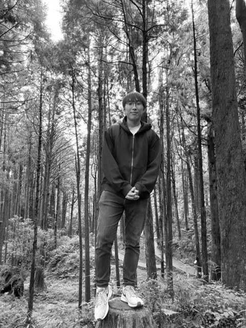
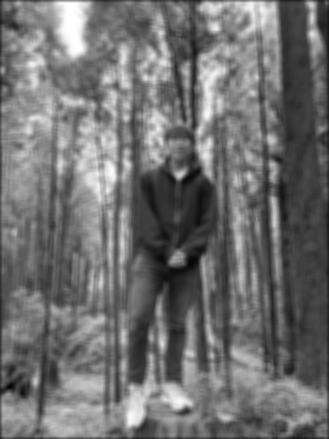
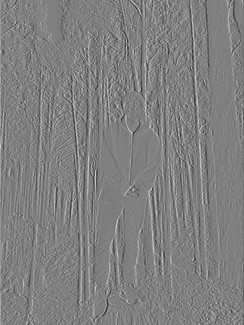
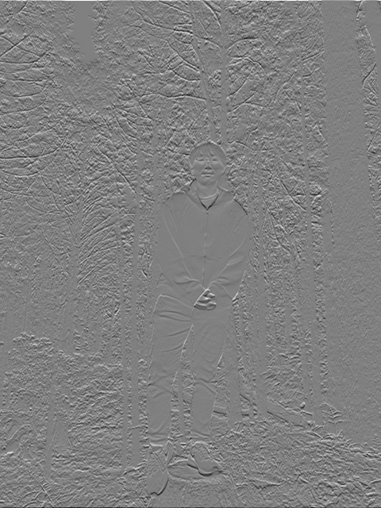
Both functions match SciPy's output. The two-loop version is faster for the box filter, but NumPy's overhead makes it slower for the small derivative filters. SciPy is fastest. Zero padding causes the dark border in the blur.
| Filter | Four loops (s) | Two loops (s) | SciPy (s) |
|---|---|---|---|
| box | 8.526 | 0.778 | 0.038 |
| dx | 0.335 | 0.718 | 0.003 |
| dy | 0.359 | 0.718 | 0.004 |
Convolution code
import numpy as np
from PIL import Image
from scipy.signal import convolve2d
def prepare(image, kernel):
image = np.asarray(image, dtype=np.float64)
kernel = np.asarray(kernel, dtype=np.float64)
kh, kw = kernel.shape
padded = np.pad(image, ((kh // 2, (kh - 1) // 2),
(kw // 2, (kw - 1) // 2)),
mode="constant", constant_values=0)
return image, padded, kernel[::-1, ::-1]
def convolve_four_loops(image, kernel):
image, padded, kernel = prepare(image, kernel)
h, w = image.shape
kh, kw = kernel.shape
result = np.zeros_like(image)
for i in range(h):
for j in range(w):
for m in range(kh):
for n in range(kw):
result[i, j] += padded[i + m, j + n] * kernel[m, n]
return result
def convolve_two_loops(image, kernel):
image, padded, kernel = prepare(image, kernel)
h, w = image.shape
kh, kw = kernel.shape
result = np.zeros_like(image)
for i in range(h):
for j in range(w):
result[i, j] = np.sum(padded[i:i + kh, j:j + kw] * kernel)
return result
image = np.asarray(Image.open("inputs/myself.jpeg").convert("L"), dtype=float) / 255
box = np.ones((9, 9)) / 81
Dx = np.array([[1., 0., -1.]])
Dy = Dx.T
for kernel in (box, Dx, Dy):
four = convolve_four_loops(image, kernel)
two = convolve_two_loops(image, kernel)
reference = convolve2d(image, kernel, mode="same")
print(np.allclose(four, reference), np.allclose(two, reference))1.2 Finite Difference Operator
I computed the x and y derivatives, then the gradient magnitude with sqrt(gx² + gy²).
I chose a threshold of 0.2 to reduce grass texture while keeping the person and camera outlines. Some background noise remains.

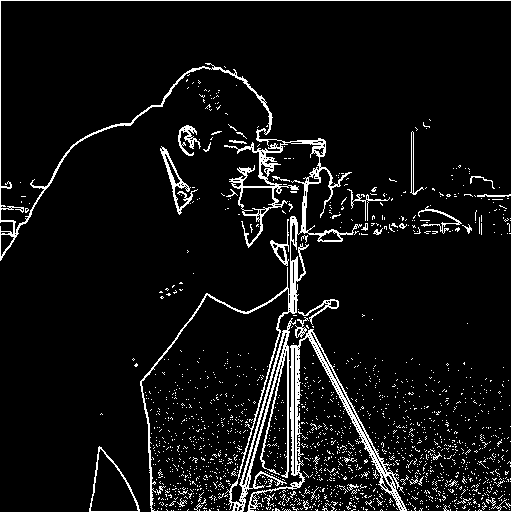
1.3 Derivative of Gaussian
I used cv2.getGaussianKernel and an outer product to make a 9 × 9 Gaussian with σ = 1.5.
Blurring before taking derivatives removes much of the grass texture, though the edges get wider. I used a lower threshold of 0.1 because the smoothed gradients are weaker.
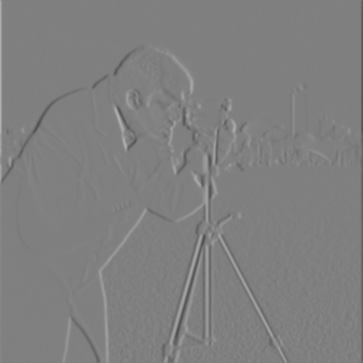
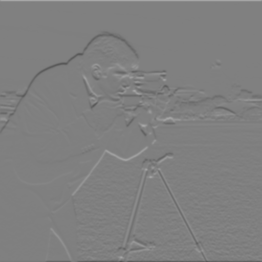
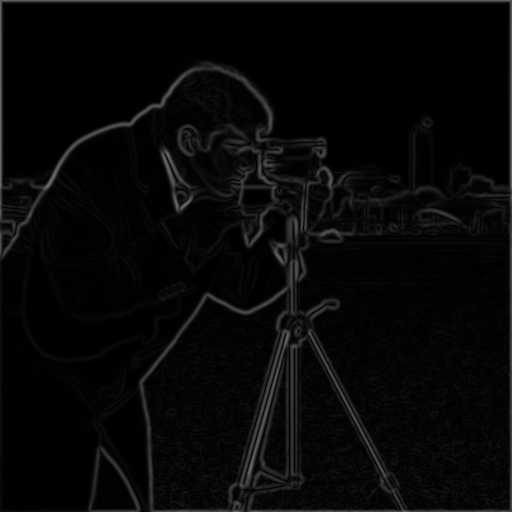
I also convolved the Gaussian with Dx and Dy to make DoG filters. Applying these directly matches blurring first and then taking derivatives, including the thresholded edges.
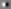

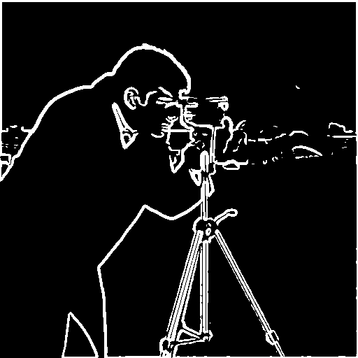

Part 2: Applications
2.1 Image Sharpening
I subtracted a Gaussian blur from each image to get its high frequencies, then added them back with weight α.
This gives a single sharpening filter: (1 + α)δ − αG. I used σ = 2.
Taj Mahal
Compare sharpening amounts
Forest portrait
Compare sharpening amounts
α = 0.5 makes a small difference, while α = 1 brings out the building details and branches. At α = 2, the edges look harsher and start to show halos.
Blur and resharpen
Sharpening the blurred image brings back some edge contrast, but it does not recover the fine details in the original.
2.2 Hybrid Images
I aligned the eyes, then added one image's high frequencies to the other's low frequencies:
hybrid = (Ihigh − Gσhigh ∗ Ihigh) + Gσlow ∗ Ilow.
Derek + Nutmeg · starter example
Forest portrait + Nutmeg
Forest portrait + Derek
My photo works better as the low-frequency image because the face is small in the original. The eyes line up, but the different head shapes still leave some overlapping outlines.
Portrait + Nutmeg: process


I tried the cutoff settings below and chose σhigh = 3 and σlow = 7 for all three hybrids. The smaller pair keeps too much portrait detail, while the larger pair makes the cat dominate.

Fourier transforms
These are the log magnitudes of the Fourier transforms. The low pass keeps frequencies near the center, the high pass suppresses them, and the hybrid combines both.
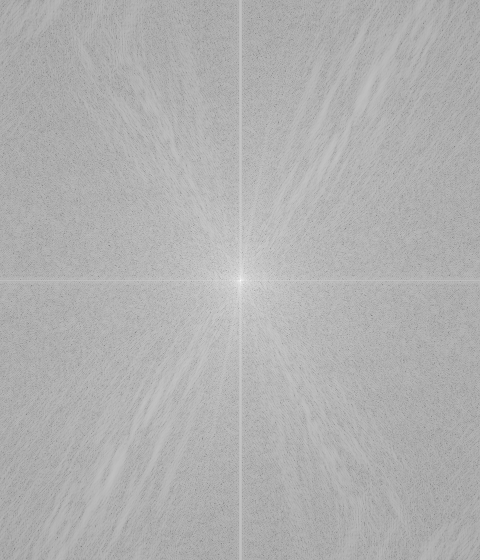
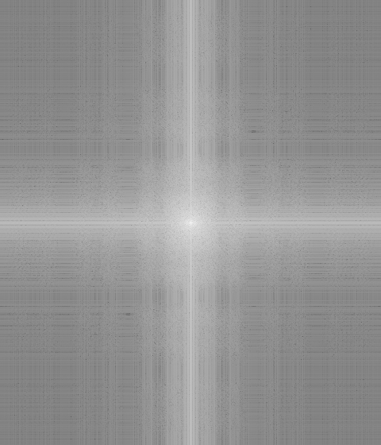
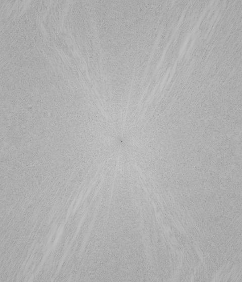
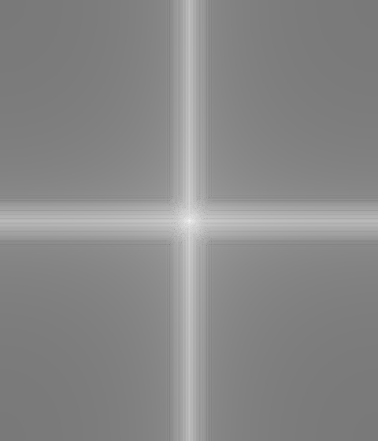
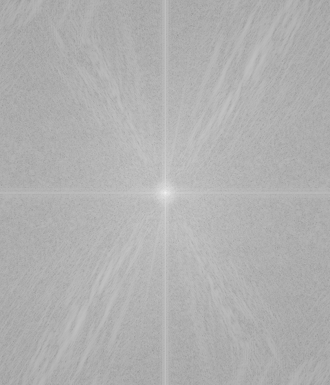
2.3 Gaussian and Laplacian Stacks
I built six Gaussian levels without resizing the images. At each step I blur the previous level, starting with σ = 2 and doubling it each time. Each Laplacian level is the difference between two neighboring Gaussian levels. I keep the last Gaussian as the final level so adding the Laplacian levels reconstructs the image.
In the Laplacian displays, gray means zero. The detail levels share a display scale, and the last level shows the remaining low frequencies.
Apple stacks
Gaussian stack

Laplacian stack

Orange stacks
Gaussian stack

Laplacian stack
Oraple stacks
Gaussian stack


Laplacian stack
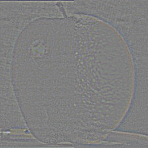
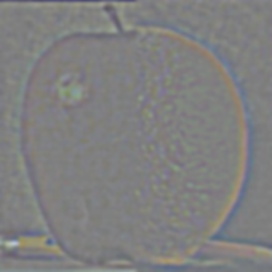
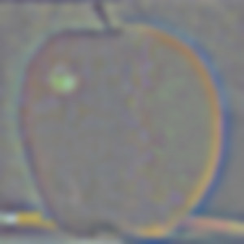
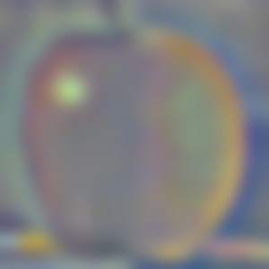
Apple–orange breakdown, (a) through (l)
The first three rows show masked Laplacian levels 0, 2, and 4. Each row uses one shared display scale. The columns show the apple contribution, the orange contribution, and their sum. The bottom row adds all six levels to reconstruct the blend.
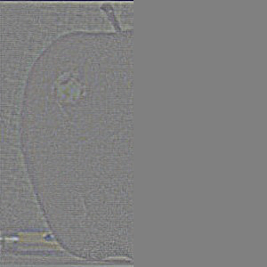
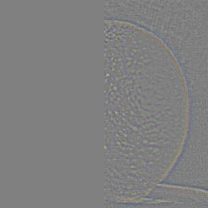
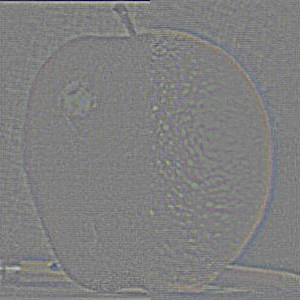
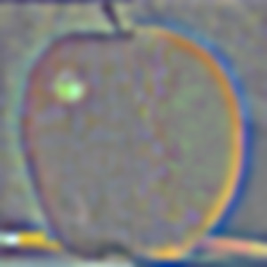
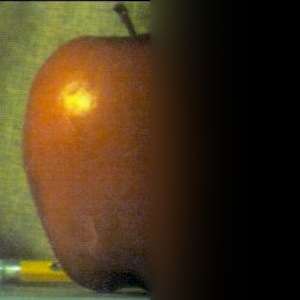
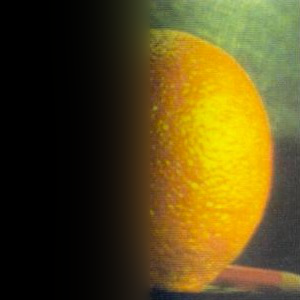

2.4 Multiresolution Blending
I also made a Gaussian stack of the mask. At each level I combined the two Laplacian images using M × Lapple + (1 − M) × Lorange, then added the levels. White in the mask selects the first image. Blurring the mask more at coarser levels makes the color transition gradual while keeping fine details.
Oraple

Compare the seam
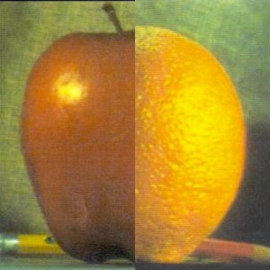
The direct cut leaves a visible line through the fruit. The multiresolution blend softens that line and joins the two colors, though the fruit outlines do not match perfectly.
Cat face
I aligned the eyes and drew a polygon around the cat’s face. Blending reduces the hard outline of the cutout. The fur is much sharper than my enlarged portrait, so the texture difference is still noticeable.
Cat-face blending process
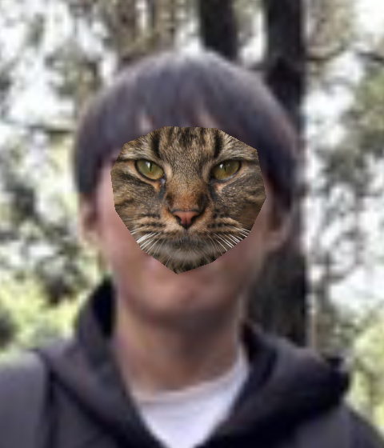
Mask stack

The masked bands below show how the cat and portrait contribute at different scales. The final row includes all six levels.


Taj in the forest


I resized the Taj and placed it to the left of me, then traced a mask around the building. The blend softens the boundary with the trees. The lighting and scale still look unnatural, which filtering alone cannot fix.

What I learned
The biggest thing I learned is that sharpening boosts detail that is already there. It does not undo blur. Comparing the original cameraman with the blurred and resharpened versions made that clear.